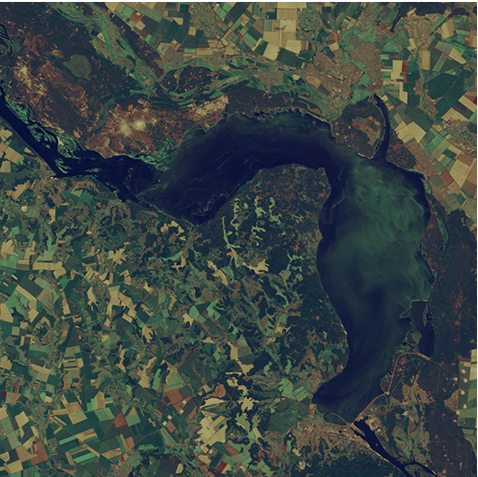

З сьомого поверху, де знаходиться відділ екології водоймищ Інституту гідробіології, київська Оболонь, як на долоні. Доктор біологічних наук Володимир Щербак веде мене на балкон, звідки годинами можна милуватися оболонською затокою. Від її берегів інститут відділяє смуга теракотових котеджів.
- Бачите їх? – Щербак показує на червоні дахи. – Їх тут не має бути. Це ж санітарна зона, а будинки означають стоки, – вчений вдивляється праворуч. – Трішки далі, де залишився вільний прохід до води, у нас станція моніторингу. Ми регулярно відбираємо проби води.
- І що там?
- Різні продукти людської життєдіяльності, – сумно всміхається він. – Спочатку вони потрапляють у воду, а потім ви мене запитуєте про «цвітіння».
Кυανοs (ціано) з грецької – «блакитний». Ціанофіти, або ціанобактерії, або синьозелені водорості – переважно вони фарбують Дніпро у зелений колір, іноді утворюючи на воді чудернацькі візерунки. Володимир Щербак вивчає їх багато років, відтоді як уперше сів за мікроскоп після закінчення університету.
- Деякі ціанофіти утворюють великі колонії з мільйона клітин, інші представлені дрібними одиночними клітинами. Подивіться на цю спору, – вчений показує прямокутник, що світиться біло-зеленим на моніторі комп’ютера. – Так синьозелені водорості зимують, витримуючи морози до 20 градусів.
«Сплять» на дні водойми, а «прокидаються» навесні, коли вода теплішає. Прокинувшись, піднімаються ближче до сонця, аби зайнятися тим, що у них виходить найкраще – фотосинтезом. Вони це роблять вже більше 2 млрд років. Це древні мікроорганізми, побічний результат їх діяльності – кисень, яким ми дихаємо. «Цвітіння» води теж. Воно означає спалахи розвитку фітопланктону, переважно ціанофітів, що перетворилися на проблему для Дніпра ще у середині минулого сторіччя.
30/07/2013
02/08/2014
05/08/2015
29/07/2016
01/08/2017
дані: lv.eosda.com
- Річка – це система, яку можна порівняти з кровоносними судинами людини, - каже колега Володимира Щербака по Інституту гідробіології, співробітник відділу іхтіології та гідробіології річкових систем Олександр Савицький. - Серце дає поштовх, кров рухається судинами, розходиться капілярами і так досягає кожної клітини. Природна річка функціонує подібним чином, але в неї таким насосом є сезонна зміна водності, що в результаті повеней і меженей (максимального падіння водності влітку) забезпечує нормальне функціонування екосистеми. Сніг тане, ріка розливається, промиває русла, якими тече. І так повторюється з року в рік, тисячоліттями. Але ж коли та природна система перегороджується дамбами, то утворюється каскад водосховищ, як наш Дніпро, або ставків, якщо річка невелика.
Фахівці Інституту гідробіології підрахували, що для нормального функціонування екосистеми, у воді має бути не більше 40 г/м3 фітомаси, тоді якість водоймища не страждає. Наразі вони фіксують до 300-400 г/м3 біомаси у місцях, куди вітер зганяє фітопланктон, що удесятеро більше від норми.
Дамби
Дніпро тече Україною 981 км, але рікою можна вважати тільки сотню незарегульованих кілометрів: 60 км від кордону з Білоруссю до Київського водосховища і ще 50 км нижче греблі біля Каховки. Все інше – каскад водосховищ.
- Гідроелектростанції будували, аби перекривати пікові навантаження на енергосистему великих міст. Пікове споживання електроенергії – це ранок і вечір, і найлегше реагувати на перепади, включаючи і виключаючи ГЕСи, – пояснює Щербак. – Крім того, вони забезпечували водою, зокрема промислових гігантів. Я й досі впевнений, що будівництво – то нерозумне рішення. Якби на теперішніх акваторіях водосховищ росла пшениця, це було б ефективніше з економічної точки зору. Але каскад – наша об’єктивна реальність і ми отримали унікальні водні об’єкти.
Найбільші – Кременчуцьке і Каховське водосховища, які мають річне регулювання стоку, а от, наприклад, Запорізьке, Дніпродзержинське – добового регулювання. У верхів’ях вони схожі на ріку, нижче – на озера. Через греблі вода у Дніпрі застоюється, зникає здатність ріки до самоочищення. Потім це стане одним з факторів спалахів розвитку ціанофітів.
Площа земель, що були затоплені під час створення каскаду, перевищує 760 км2. З них більше трьохсот – сільськогосподарські угіддя і майже стільки ж – ліси. Водосховища створювались на українських чорноземах. Теоретично шар родючих ґрунтів мали б зняти, але фактично обійшлися без цього. І фітопланктон отримав величезний стіл з їжею.
Для розвитку ціанофітів потрібні не тільки світло, як джерело енергії, та вуглець, як основний будівельний матеріал, але й елементи мінерального харчування. Хліб і м’ясо ціанофітів - азот і фосфор. Їх дефіцит стримує розвиток синьозелених водоростей, а збільшення концентрацій у воді навпаки стимулює до неконтрольованого розмноження.
Затоплені чорноземи були багаті і на азот, і на фосфор, тому водосховища рясно «цвіли» протягом 3-6 років після створення. У деяких місяцях фітомаси накопичувалося так багато, що вода нагадувала густу манну кашу. Потім «цвітіння» поступово зменшувалось, але екосистема водоймищ урівноважилася тільки у середині 1980-х років. На це знадобилось двадцять років.
Фосфор
Наразі головним чинником «цвітіння» українських водоймищ Володимир Щербак називає підвищення концентрації фосфору в акваторіях. Фосфор активно використовується у різних миючих засобах. Його у річку приносять стічні води, він – «їжа» для ціанофітів. Вчений показує графіки вмісту азоту та фосфору у воді.
- Загальний азот у 1965-1985 роках був у межах 1,1- 0,6 мг/дм3. А у період з 2008-го по 2015 рік його концентрація зменшилась майже удвічі – до 0,5-0,2 мг/дм3. Азотних добрив, які потрапляють у воду зі стоками, сільське господарство зараз використовує значно менше, ніж наприкінці 1980-х. І це плюс.
За даними Держкомстату, внесення азотних добрив на один гектар в Україні і справді має тенденцію до зниження. Якщо у 1990 році цей показник сягав 44,9 кг, то у 2015 році в середньому не перевищував 27 кг. До речі, ситуація з фосфорними добривами схожа – їх споживання на один гектар скоротилося з 31,9 кг до 6,1 кг.
Вміст фосфору у воді зростає, як пояснює Володимир Щербак, через бум використання миючих засобів, в яких є фосфати. У Інституті гідробіології підрахували, якщо у 1965-1985 роки його концентрація у воді не перевищувала 0,04 мг/дм3, то з 2008 року вона збільшилась до 0,1 мг/дм3, а в деякі роки вчені фіксували навіть 1,36 мг/дм3.
- Санітарні інспекції не працюють, а залпові скиди, які ми почали спостерігати ще у 1980 роки, почастішали, - розповідає Володимир Щербак. - Багато підприємств мають свої водонакопичувачі. Коли вони заповнюються відходами, то їх треба переробляти, як передбачено технологією конкретного виробництва. Але наші підприємства спочатку збирають повні водоймища, а потім у п’ятницю ввечері або зранку у суботу відкривають шлюзи. Пляма починає свою подорож рікою. Якщо десь риба загинула, то і є типовий наслідок залпового скиду.
Ситуація ускладнюється тим, що до цих факторів «цвітіння» води додались нові.
Глобальне потепління
Через аномалії клімату останні роки маловодні. Талої води майже немає, водність водоймищ зменшується, а концентрація фосфору відповідно збільшується.
- Це все одно що у чашку з чаєм додати ложку цукру, - пояснює Щербак. - Якщо чашка повна, то ви можете навіть не відчути цього. Але якщо вона заповнена лише наполовину, то чай буде солодким. Так і з акваторіями водосховищ.
Глобальні зміни клімату проявилися не тільки у зменшенні водності, але й у підвищенні температур. У цьому році, приміром, «цвітіння» запустили несподівано високі температури у квітні, які «розбудили» ціанофіти і ті зарано почали підійматися на поверхню.
Забудова берегів
Вода ще більше застоюється через будівництво на берегах водоймищ, яке порушує водообмін між водосховищами та підземними водами.
- Наприклад, обвідний канал біля Київського моря мав би бути вільною від забудови зоною, - каже Володимир Щербак. - Але у нашу останню експедицію ми змогли під’їхати до води лише в декількох місцях. Ось тому і настають синьозелені роки.
Наприкінці червня 1998 року на Кременчуцькому водосховищі зграї судака кинулись на турбіни греблі. За машинами утворилось місиво з риби. Полтавська рибінспекція звернулася в Інститут гідробіології, аби там пояснили явище.
- Я сказав, що у воді мало кисню, але мені спочатку не повірили, - згадує Володимир Щербак. Після проведення замірів виявилось, що у водосховищі рівень кисню був у кілька разів нижчий за норму. Причина – «цвітіння».
- Водообмін у Кременчуцькому водосховищі уповільнений, а на греблевій ділянці за рахунок роботи турбін вода хоч трохи рухалась. Судак попрямував туди, адже ці риби люблять кисень, і натрапив на турбіни, - каже Володимир Щербак. – Під час спалахів розвитку фітопланктону він може потрапляти до зябер риб і забивати їх, або призводить до заморів через знекиснення.
Ці водорості назвали синьозеленими невипадково. Поки живі, вони зелені, адже мають багато хлорофілу. Як тільки починається процес розкладання, то першим відмирає хлорофіл, і водорослі змінюють колір. Деякі види цих мікроорганізмів до того ж виділяють токсини.
Коли вода інтенсивно «цвіте», глибше двох метрів сонячні промені вже не потрапляють. З цього і починається процес відмирання фітопланктону, який осідає на дно. Там його переробляють бактерії, але на це вони витрачають увесь кисень. У водоймах утворюються «мертві зони», непридатні для життя. Наші водосховища мають чіткий розподіл: сприятлива зона – це приблизно два метри від поверхні, далі перехідна зона на глибині до 5 метрів, глибше – здебільшого мертва.
На дні
Здається, що вирішити проблему «цвітіння» просто - припиняєш скидати азот і фосфор у воду і все по тому. Проте легко тільки ламати, відновлювати екосистеми з безліччю взаємозв’язків набагато складніше.
Зима 2010 року була надзвичайно сніжною, тож метеорологи прогнозували весінні паводки. На Київському водосховищі вирішили їх не чекати і спустили воду ще у лютому. Володимир Щербак згадує:
- Це був кричущий випадок. Вони злякалися, що хороми на березі Дніпра затопить. Шар льоду товщиною десь 70 см впав на дно, і як плугом проорав його, піднявши все, що десятиліттями осідало.
Минуло вже сім років, але згадуючи ту історію, він і досі нервує. Бо знає, що Київське море - депо чорнобильських радіонуклідів та інших шкідливих речовин. У його мулі вчені і досі знаходять навіть ДДТ (у народі – дуст), заборонений ще у 1960 роках.
Осідаючи, відмерлий надлишковий фітопланктон утворює донні відклади. Зараз їх шар у водоймищах сягає 5-7 см. Вони ж і заважають швидкому оздоровленню акваторії.
За спиною Володимира Щербака дивна фотографія – сіра площина поділена навпіл якоюсь смугою. То фото з експерименту, який він проводив кілька десятків років тому. На Київському водосховищі частину водної акваторії у 800 м3 ізолювали, аби зрозуміти, як вона буде розвиватися у порівнянні з самим водосховищем. Протягом чотирьох місяців туди не потрапляли стічні води, але глобально на якість відокремленої ділянки це не вплинуло.
- Наші водоймища самі по собі багаті на азот і фосфор. І якщо ці елементи перестають потрапляти ззовні, то азот і фосфор все одно продовжують вивільнятися з донних відкладів, - пояснює Володимир Щербак.
До такого ж висновку дійшов професор Девід Шиндлер з Альбертського Університету в Канаді, який у 1970-1980 рр. керував проектом «Експериментальні озерні території» з вивчення «цвітіння» озер та повернення їх до первісного стану. Проаналізувавши багато робіт, зокрема ту, що описувала досвід реабілітації більш ніж 30 озер, він дійшов висновку, що контроль за надходженнями ззовні поживних речовин для наших водорослів, особливо, фосфору, – найважливіший механізм покращення стану водоймищ. Але треба враховувати не тільки поточні чинники, а й передісторію певної екосистеми. Тому процес оздоровлення складний і може тривати 10-40 років.
До речі, обмеження щодо скидів фосфору у водоймища наразі діють і в США, і в Європейському Союзі, країни якого підписали Водну рамкову угоду і погодились запровадити заходи із охорони водних ресурсів, зокрема від хімічного забруднення.
Нещодавно про «цвітіння» говорили у Державному водному агентстві України. Вчені розповідали про аератори, які збагачують воду киснем і забезпечують її рух (такі, до речі, встановили на озері Тельбін у Києві). А також про біологічний спосіб очищення за допомогою водорості хлорели або вселення білих товстолобиків, які харчуються ціанофітами. Адже літо – це не тільки сезон «цвітіння», а ще й період сплеску розмов на цю тему. Проте далі розмов справа до цього часу у нас не рухалась.
Є лише окремі більш-менш позитивні приклади, як то очищення каналу «Дніпро-Донбас». Його зариблювали, додавали у воду спеціальні бактеріальні суміші, що пригнічували розвиток синьозелених водоростей. Глобально ж в Україні не вдалося навіть запровадити обмеження щодо вмісту фосфатів у миючих засобах, хоча про це йдеться вже багато років поспіль, і такі обмеження давно існують у ЄС. Останнього разу відповідний законопроект потрапив до Верховної Ради у 2016 році, але документ відправили на доопрацювання.
– Це у той час як очисні споруди фактично не очищують стоки населених пунктів та підприємств від фосфатів, – каже голова громадської організації «Громада Рибалок України» Андрій Неліпа. – Принцип «забруднювач платить» не діє. Роботи з очистки русел і днопоглиблення у нас несистемні та ведуться хіба що видобувачами піску там, де їм зручно. От і маємо, наприклад, в Києві під Московським мостом ями глибиною до 40 м, а біля набережної Дніпра поруч з мостом Метро – суцільні засмічені мілини, які влітку «цвітуть і пахнуть».
Щороку Бюджет платить чималі суми по держпрограмі «екологічного оздоровлення басейну річки Дніпро», так у 2017-му виділили – 2 мільярди 166 мільйонів гривень.
Повчитися, як ефективно витрачати кошти на оздоровлення ріки, є в кого. Досвід реабілітації акваторій, наприклад, у європейців і американців досить великий. Вони займаються цими проблемами з 1970 років, адже «цвіте» не тільки Дніпро. За даними Центру енергетичних досліджень Нідерландів, з 1960 року кількість фіксованих «мертвих зон» у водоймищах подвоюється кожні 12 років.
Північноамериканське озеро Ері – один з яскравих прикладів як забруднення, так і об’єднання зусиль двох країн (США та Канади) щодо його оздоровлення.
На узбережжі Ері мешкає 12 млн чоловік. У регіоні активно розвивається сільське господарство та промисловість, а супутники регулярно роблять фото з зеленими плямами на його поверхні. Ері - перше з Великих озер постраждало від скидів стічних вод, через які у воді збільшилась концентрація азоту та фосфору. У 1960-1970 роки через інтенсивне «цвітіння» в озері почала зникати риба, а його назвали мертвим. Скупчення водоростей Cladophora, що гнили на берегах, доводилось прибирати бульдозерами.
У 1972 році США та Канада підписали угоду про якість води Великих Озер. Обидві країни зобов’язалися контролювати три основні джерела надходження фосфору у воду: викиди муніципальних очисних споруд, промислові відходи та сільськогосподарські стоки. Тоді було визначено 43 зони, що потребують особливої уваги. Викреслюють зі списку тільки ті ділянки, на яких звершено роботи з очищення. Поки що їх небагато.
На першому етапі, розрахованому на чотири роки, США та Канада домовились скоротити надходження фосфору до води з 31 тис. т на рік до 16 тис. т. Десь на початку 1980-х років вчені помітили перші ознаки покращення стану акваторії, проте вміст фосфору і досі високий. 2012 року прийняли рішення впродовж чотирьох років зменшити викиди до центрального та західного басейну Ері до 6 тис. т. Загалом протягом 2010-2015 рр. тільки США реалізували 680 проектів із зменшення забруднення водоймища вартістю $60 млн.
Можливо, Дніпрові теж пощастить і його почнуть «лікувати».